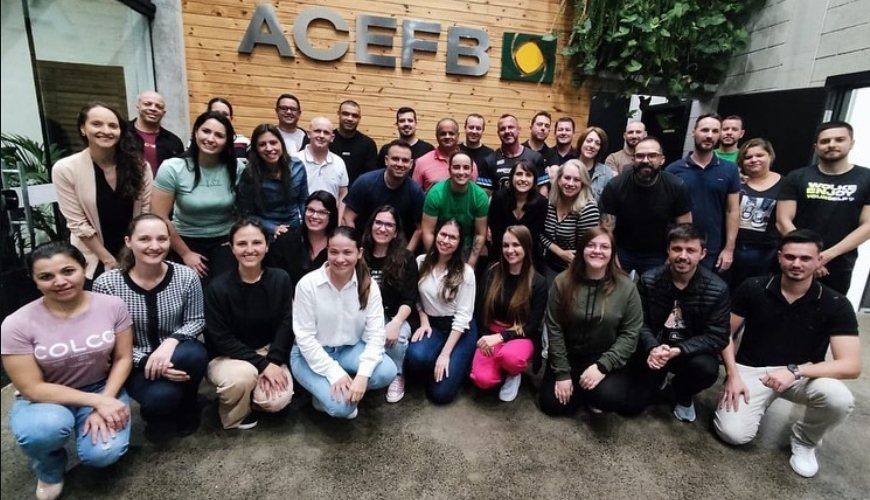
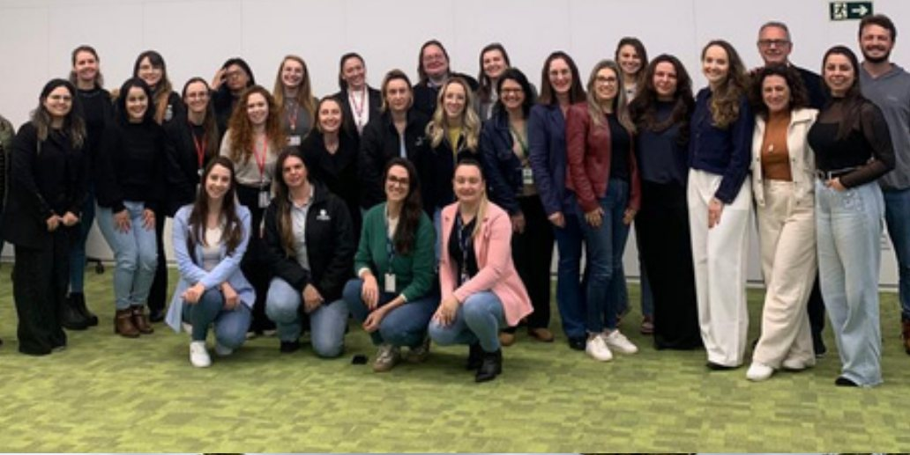
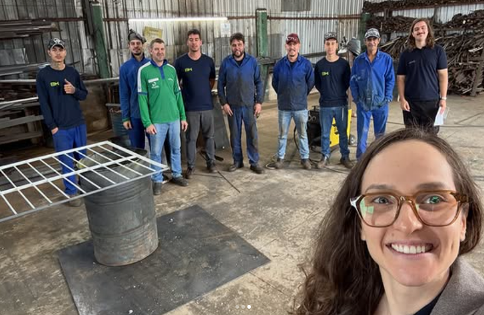
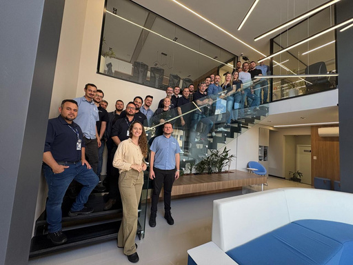
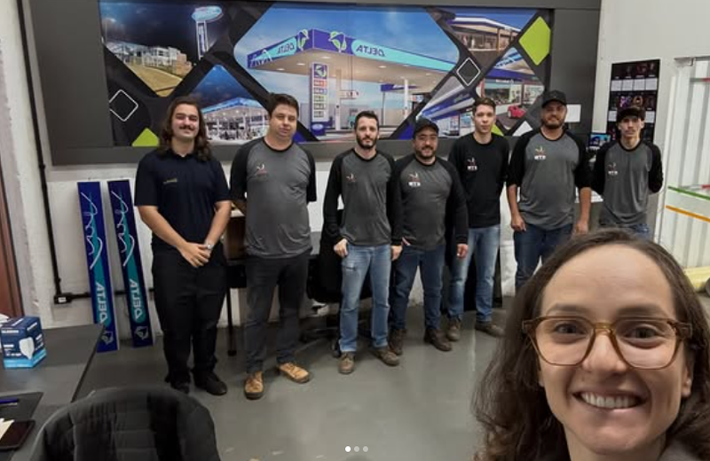
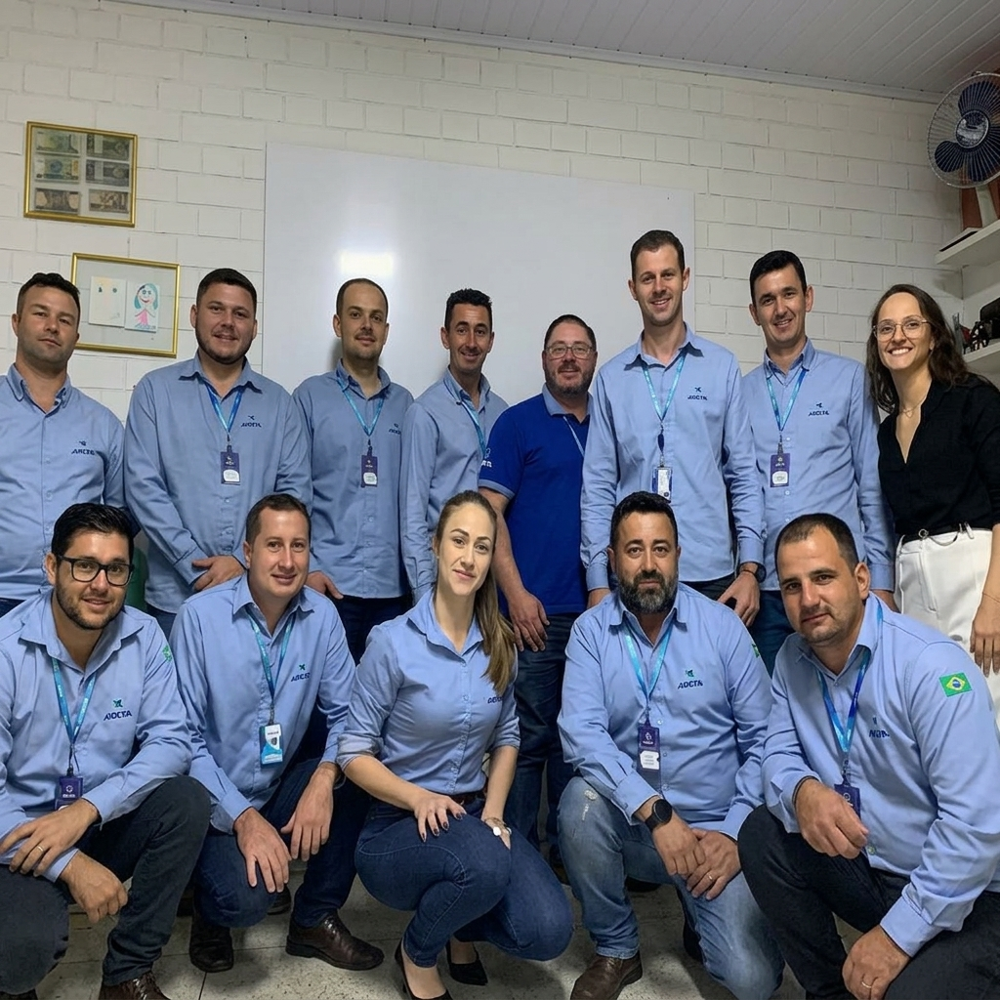

“Tivemos uma evolução muito significativa no desenvolvimento da nossa equipe, graças aos treinamentos executados e bem pontuados. Considero extremamente importante dar esse feedback sobre a evolução que alcançamos, e achei muito positivo acompanhar esse processo.
Neste último treinamento, ficou evidente o quanto o time se desenvolveu e conseguiu evoluir. Então, parabéns! Acredito que o seu trabalho está sendo executado de forma consistente, com direcionamento claro, e já apresenta resultados muito expressivos.”
SOLIDÃO.
Crescer a sua empresa não precisa ser um caminho solitário. Fazemos isso com você, com previsibilidade e estabilidade.
Carta ao empresário · Evolve Capital Humano
Você abriu o seu negócio buscando liberdade.
Você abriu o seu negócio buscando liberdade.
Hoje, sente exatamente o contrário.
A gente sabe como esse dia termina, porque escuta isso quase toda semana. A empresa cresceu. O faturamento subiu. O nome na cidade ficou maior. E, junto com tudo isso, cresceu também o número de coisas que só passam por você.
A empresa depende de você para tudo. Você resolve problemas o dia inteiro. Falta tempo. As decisões ficam concentradas. As pessoas não assumem responsabilidade. E o crescimento, que devia ser motivo de orgulho, acontece de forma desorganizada — puxado no esforço, não sustentado por estrutura.
E, ao mesmo tempo, você sente que já deveria estar mais longe do que está hoje.
Essa é a parte que raramente é dita em voz alta. Não é sobre o negócio ir mal — muitas vezes ele vai bem. É sobre carregar sozinho um peso que não deveria ser de uma só pessoa, e não conseguir explicar isso para quem está do lado de fora, porque de fora parece que está tudo resolvido.
Você não quer apenas aumentar o faturamento. Você quer construir uma empresa que funcione sem depender exclusivamente de você.
Se três destes seis sinais forem verdade, o problema não é você.
- 01Você participa de quase todas as decisões e não consegue se afastar.
- 02As áreas trabalham muito, mas sem direção nem indicadores comuns.
- 03Os processos dependem de pessoas específicas e não estão claramente definidos.
- 04Há bom faturamento, mas pouca clareza sobre margem, prioridades ou sustentabilidade.
- 05As lideranças foram promovidas pela competência técnica e não sabem gerir pessoas.
- 06Você não dá mais conta sozinho, e se tornou refém do próprio negócio.
Nenhum desses pontos se resolve com um treinamento motivacional. Nenhum deles se resolve com um relatório em PDF entregue no fim de um diagnóstico. Eles se resolvem quando alguém entra junto com você, no problema concreto, e constrói o como.
Quem está escrevendo esta carta.
A Evolve é uma consultoria especializada na estruturação de pequenas e médias empresas. Mais do que resolver problemas pontuais, construímos modelos de gestão que tornam as empresas mais organizadas, eficientes, seguras e preparadas para crescer.
Não vendemos treinamentos. Não vendemos apenas RH. Não vendemos somente adequação à legislação. Construímos empresas que funcionam melhor — integrando estratégia, pessoas, processos, segurança jurídica e saúde organizacional no mesmo movimento.
Diagnóstico que termina em relatório não transforma empresa. A Evolve fica para construir o próximo passo.
Por que com a gente costuma ser diferente.
Porque o nosso critério de conclusão não é a entrega do documento. É outra pergunta, que a gente faz internamente antes de encerrar qualquer projeto: “o cliente conseguirá continuar fazendo isso quando não estivermos presentes?” Enquanto a resposta for não, o trabalho não está pronto.
É por isso que desenhamos a solução com as pessoas que conhecem a operação — e não sobre elas. Testamos em pequena escala quando o risco exige. Capacitamos, acompanhamos a aplicação e ajustamos. E encerramos com responsáveis, indicadores e próximos ciclos definidos, para que a estrutura continue de pé sem a nossa presença.
Isso muda o que você compra. Você não contrata um parecer sobre a sua empresa. Você contrata capacidade instalada dentro dela.
E, sim, já fizemos isso antes.
Não vamos prometer prazo genérico nem número mágico. Vamos mostrar o que duas lideranças escreveram, com as próprias palavras, depois de atravessar esse processo com a gente. Você lê os depoimentos completos logo abaixo desta carta.
Se você chegou até aqui, é porque alguma parte disso descreveu a sua semana. O próximo passo é simples e não custa nada: entender onde a sua estrutura está hoje.
Equipe Evolve Capital Humano
Estruturamos negócios para que pessoas e resultados evoluam juntos.
Vozes de quem viveu
É esse problema que a gente resolve.
Depoimentos recebidos de lideranças clientes, reproduzidos na íntegra.
“A parceria com a Evolve foi um marco muito positivo para a nossa empresa. No decorrer do tempo elaboramos vários projetos e muito desenvolvimento pessoal e profissional na equipe interna.
O acompanhamento contínuo da equipe fez toda a diferença. A presença da Amanda trouxe segurança, apoio e orientação tanto para coordenadores quanto para colaboradores, ajudando a lidar melhor com desafios, conflitos e mudanças. Problemas que antes se prolongavam passaram a ser tratados com mais rapidez e maturidade.
De uma forma geral, percebemos uma empresa mais organizada, humana e alinhada. O ambiente de trabalho melhorou, as pessoas se sentem mais ouvidas e o desempenho das equipes evoluiu de maneira consistente. Hoje temos a Amanda como uma ‘parte’ da nossa empresa e sabemos que podemos contar sempre com seu apoio.”
Presença
Nós vamos a campo com você.
Cada história é diferente. A nossa entra onde a sua mais precisa — no galpão, no balcão, na sala de reunião.

Ação empresarial
Treinamento de equipe
Indústria familiar
Equipe operacional
Comércio varejista
Equipe cliente · encontro de desenvolvimento
A mudança
Do negócio que depende do empresário
Do negócio que depende do empresário
para a empresa capaz de funcionar com autonomia.
Antes
Sobrecarga e centralização
Decisões operacionais sufocando o dia a dia de quem deveria estar pensando os próximos anos.
Depois
Estrutura e autonomia
Papéis definidos, alçadas claras e o dono atuando onde só ele pode atuar.
Antes
Gestão reativa
Apagando incêndios, sem previsibilidade e sem espaço para planejar.
Depois
Previsibilidade e ordem
Prioridades, metas, indicadores e ritos de acompanhamento com cadência.
Antes
Lideranças inseguras
Gestores que dependem do dono para medir resultado e resolver conflito.
Depois
Liderança madura
Líderes preparados para conduzir pessoas, decisões e conversas difíceis.
Antes
Processos na cabeça das pessoas
Se alguém sai, a rotina para — e o conhecimento sai pela porta.
Depois
Processo descrito e treinável
Fluxos, responsáveis e critérios registrados de forma simples e utilizável.
Antes
Riscos invisíveis
Passivos trabalhistas e fatores de saúde que só aparecem quando já custaram caro.
Depois
Segurança rastreável
Conformidade documentada, plano 5W2H com responsáveis e reavaliação.
Passe o mouse sobre cada linha para operar a transformação
O que realmente vendemos
Toda a comunicação da Evolve gira em torno de
estrutura.
crescimento.
pessoas.
segurança.
liberdade.
- 01Empresas desorganizadas em empresas estruturadas
- 02Gestão intuitiva em gestão profissional
- 03Crescimento improvisado em crescimento sustentável
- 04Riscos invisíveis em segurança trabalhista
- 05Dependência do dono em autonomia da organização
Como trabalhamos
Quatro fases, uma só direção: autonomia.
A mesma metodologia sustenta as quatro frentes de atuação. Prazos são definidos no alinhamento inicial, conforme o porte e o estágio de cada empresa.
Fase 01
Diagnóstico organizacional
- Escuta do dono, da liderança e de quem executa o trabalho
- Investigação das causas antes de qualquer recomendação
- Prioridades de intervenção com evidências
Fase 02
Plano de ação 5W2H
- O que fazer, por quê, quem faz, quando e como
- Escopo, hipóteses e limites explícitos
- Critérios de conclusão definidos antes de começar
Fase 03
Implantação acompanhada
- Solução desenhada com quem conhece a operação
- Capacitação, aplicação no trabalho e ajuste
- Mediação dos conflitos que a mudança revela
Fase 04
Transferência de método
- Responsáveis, indicadores e próximos ciclos definidos
- Materiais simples de usar e robustos para orientar
- A empresa segue sem depender da nossa presença
Credibilidade
Experiência sólida a serviço de PMEs que querem crescer.
Nacional
Atuação e atendimento em todo o território brasileiro.
+0
Pessoas e colaboradores impactados direta e indiretamente.
0anos+
De experiência prática em Departamento Pessoal em empresas familiares.
NR-1
Certificação Internacional em Segurança Psicológica do Trabalho.
Encaixe
Não vendemos tudo para todos.
Vendemos o próximo movimento que o negócio realmente precisa e consegue sustentar. Por isso, é honesto dizer também com quem não funcionamos bem.
Funcionamos muito bem com
- Empresas de aproximadamente 10 a 200 colaboradores.
- Negócios em expansão, profissionalização, reorganização ou sucessão.
- Empresas ainda dependentes dos donos ou de poucas pessoas-chave.
- Gestores que reconhecem o problema e querem construir a solução — não apenas receber um relatório.
Provavelmente não somos para
- Quem tem baixo nível de consciência organizacional e do próprio papel na mudança.
- Quem quer tudo pronto e não se vê como parte do processo.
- Quem busca um pacote genérico, aplicável a qualquer empresa sem diagnóstico.
- Quem procura dependência permanente de um consultor, em vez de autonomia.
Ecossistema
Quatro áreas, uma mesma transformação.
Você pode chegar por um serviço específico. Na prática, um mesmo projeto integra diferentes competências conforme o diagnóstico.
Operacional de DP
Rotinas burocráticas organizadas, gestão e processamento de folha de pagamento, obrigações do eSocial e eliminação de riscos trabalhistas.
Ver a frenteRecrutamento e Seleção
As pessoas certas nos lugares certos, com definição de perfil, avaliação por evidências e apoio à decisão.
Ver a frenteRiscos Psicossociais e Saúde Organizacional
Da exigência da NR-1 à gestão real: diagnóstico, plano 5W2H, integração ao GRO/PGR e melhoria contínua.
Ver a frenteLiderança e Desenvolvimento Humano
Preparar quem conduz pessoas, decisões e resultados — com prática, aplicação no trabalho e acompanhamento.
Ver a frente
Dúvidas frequentes
Respostas diretas para decisões estratégicas.
Diagnosticamos, desenhamos o plano de ação em 5W2H e entramos na operação para implantar junto com você e a sua equipe, acompanhando até que o time conquiste autonomia. Nosso critério de conclusão é uma pergunta interna: o cliente conseguirá continuar fazendo isso quando não estivermos presentes?
Não. A Evolve estrutura e desenvolve a equipe que você já tem. Se existe um profissional de RH ou DP, nós instalamos o método e qualificamos essa pessoa. Se não existe, começamos do início — boa parte dos nossos clientes chega exatamente assim.
Pela combinação de três coisas: processos claros e descritos, lideranças preparadas para tomar decisões operacionais dentro de alçadas definidas, e governança de indicadores para você acompanhar sem precisar estar no meio de cada decisão.
É justamente para isso que existimos. A Evolve entra na operação para tirar peso de cima de você, não para adicionar mais uma reunião na sua agenda. O trabalho é feito com o seu time, com a sua presença dosada apenas no que só você pode decidir.
Muita consultoria aponta falhas e deixa o cliente sozinho para resolvê-las. Nós desenhamos a solução com as pessoas que conhecem a operação, capacitamos, acompanhamos a aplicação e encerramos com responsáveis e indicadores definidos. O que combatemos explicitamente é o documento sofisticado que ninguém consegue usar.
Sim. Atendemos PMEs de 5 a 200 colaboradores, e uma parte importante dos nossos clientes chega sem nenhuma estrutura de RH. É daí que a gente começa.
Atuamos nacionalmente com indústria, comércio, serviços e empresas familiares em fase de sucessão. O projeto é ajustado ao estágio e à realidade do negócio — o método se adapta ao setor, não o contrário.
Depende do porte da empresa e do que está sendo trabalhado, e prazos exatos são definidos no alinhamento inicial. O que garantimos desde o primeiro diagnóstico é a direção certa, com critérios de conclusão combinados antes de começar.
Não. Trabalhamos com fatores organizacionais do trabalho. Questões clínicas, jurídicas, médicas ou de engenharia de segurança são encaminhadas para profissionais habilitados, e isso fica explícito no escopo de cada projeto.
O próximo passo
Uma empresa mais autônoma
Uma empresa mais autônoma
começa com uma gestão mais estruturada.
Converse com a equipe da Evolve e transforme a sobrecarga de hoje em crescimento previsível.
Provisório E-mail, telefone e endereço institucionais entram aqui quando os dados oficiais forem liberados.